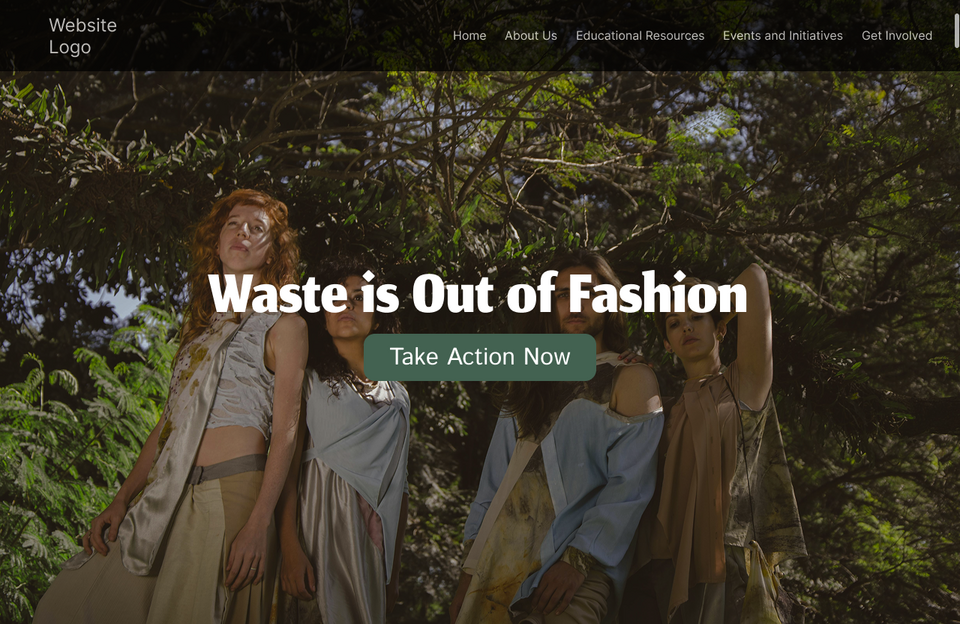
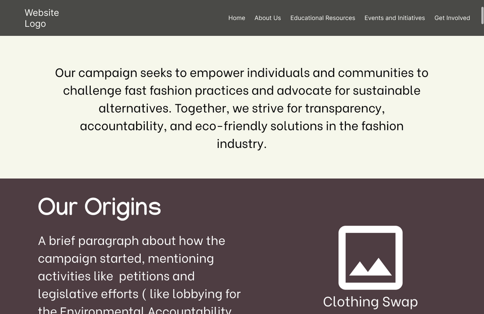
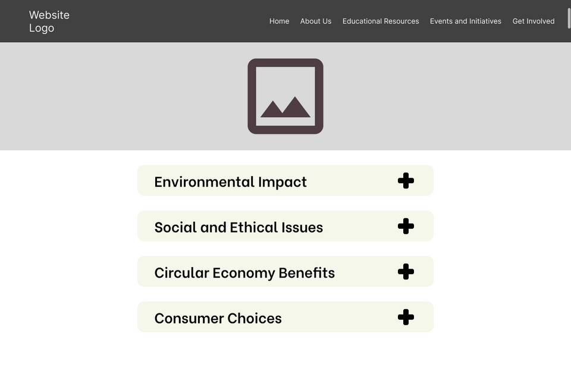
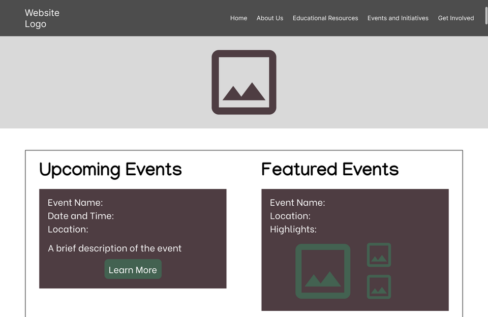
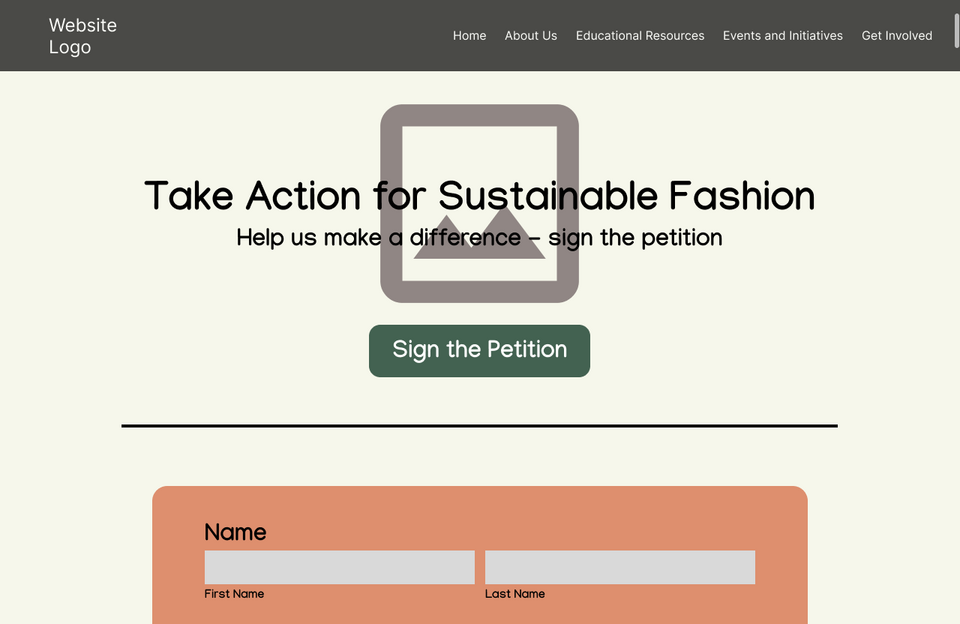
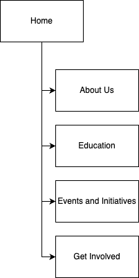

Requirements and Design Document
Project Name: Fashion Forward, Fashion Reset [WIP]
Project Overview
Purpose: The website is designed to promote eco-friendly clothing practices and educate individuals about the importance of reducing fashion-related environmental impact. Its purpose is to showcase the Sustainable Fashion Campaign, petitioning H&M to adopt more sustainable fashion practices. It aims to educate users on the environmental and ethical impacts of fast fashion, foster a circular economy, and promote policies holding companies accountable for their practices.
Intended Users: Intended for individuals of all ages, but it focuses on engaging younger generations who are more familiar with fast fashion’s impact, as well as educating older individuals new to the issue.
Content Overview: The website will have pages that give detailed information about the campaign goals and actions (e.g., petitions, events, lobbying efforts). It will include educational content on fast fashion dangers, iInformation on promoting a circular economy and sustainable practices, and brief mentions of the campaign’s affiliation with NCPIRG.
Client Information
- Name: Danielle Deavers
- Organization: NCPIRG
- Email: [private]
- Phone: [private]
Wireframes
Wireframes created using Figma:





Site Map
Sitemap created using draw.io:

Page Design
Home
- Purpose: To welcome users and introduce the campaign. The page will highlight its mission and engage visitors with a clear and compelling message
- Audience: General public of various ages, students, eco-conscious individuals, potential supporters, etc.
- Content: It will have a catchy and memorable tagline and a brief introduction to the purpose of the website and the campaign's goals. As well as visuals and statistics to engage the users
- Data Fields?: No fields where the user will fill out information
- Buttons?: Buttons to direct them to other pages on the website
- Actions?: Users are taken to another page or a video plays when the play button is clicked
About Us
- Purpose: To provide background information about the campaign, the client, the importance of sustainable fashion. This will also contain a brief explanation of the affiliation with NCPIRG
- Audience: Potential supporters, collaborators, and individuals curious about the campaign’s mission and background.
- Content: Where the idea of the campaign came from, background of the client and their relationship to the message, key members of the campaign (brief mention of NCPIRG)
- Data Fields?: No fields
- Buttons or hyperlinks?: Link to contact client and reach the NCPIRG website
- Actions?: Users are taken to an external webpage
Educational Resources
- Purpose: Inform and educate visitors about sustainable fashion practices and encourage eco-friendly habits, and include detailed information about the dangers of fast fashion
- Audience: Users looking to learn about sustainability, students, and environmentally conscious shoppers looking to educate themselves
- Content: Resources, articles, and videos on topics showcasing the impact of fast fashion on the environment and society, and also a bit on how to identify sustainable brands and ensuring clothes last a very long time to reduce waste while remaining fashionable
- Data Fields?: No fields
- Buttons?: Buttons to view resources that answer questions and provide tips, drop-down menus categorizing topics, and videos
- Actions?: The menus will collapse and expand and the videos will play content when clicked on
Events and Initiatives
- Purpose: Provide resources and guidance for visitors to find sustainable fashion options and information on past and upcoming campaign activities to foster engagement and showcase the impact of the campaign
- Audience: Users looking support the campaign and potential participants
- Content: Descriptions and visuals of previous events such as the clothing swap and legislative lobbying. Announcements of future events
- Data Fields?: No data entry
- Buttons?: Buttons to navigate the gallery, videos, and links to sign up for events
- Actions?: Clicking on links navigate to a page they can register for events
Get Involved
- Purpose: Encourage users to actively participate in the campaign by signing up for events, volunteering, petitioning, or donating
- Audience: Individuals interested in making a difference through direct involvement or support
- Content: A form to receive more information about the campaign opportunities on how they can get involved and volunteer and to petition
- Data Fields?: Fields to enter their name and other basic information
- Validation?: validate the email format
- Buttons?: Button to submit a form, and links to donation websites and other sustainability campaigns
- Actions?: The submit button will process the forms and links will navigate to different websites
Dynamic Functionality
The website for the "Sustainable Fashion Campaign" will incorporate dynamic functionalities to engage users and promote meaningful action. On the 'Get Involved' page, visitors can sign a petition using a form. The 'Events and Initiatives' page will feature a photo gallery, allowing visitors to explore past campaign activities like clothing swaps and educational events interactively. On the 'Educational Resources' page, a menu will organize content into collapsible sections, making information on fast fashion's environmental impact easily accessible. Search functionality will further enhance user experience, helping visitors locate specific articles or events effortlessly.
Additional features include interactive elements like drop-down menus and embedded videos will enrich the educational pages, while image galleries will visually showcase the campaign's progress. Each functionality aligns with the website's goals to inform, engage, and empower users. Examples of similar functionalities can be found on websites such as Change.org for petitions and W3Schools with the menus. By integrating these features, the website will serve as a comprehensive platform to advance the sustainable fashion movement.